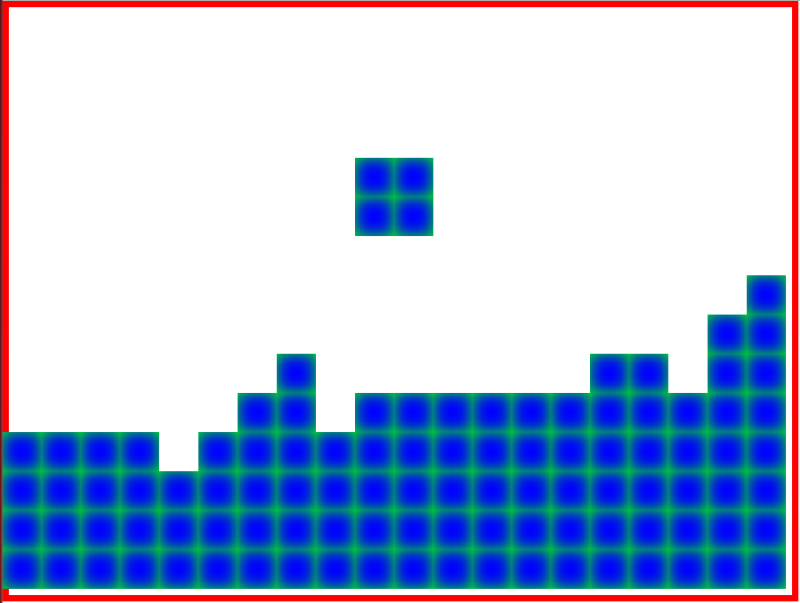

In the previous article we refactored the domain model, simplified the React rendering, and added some JavaScript unit tests.
In this addition we work on collision detection and add event handling for rotation and lateral movement.
To follow along with this article checkout the commit ce0c31.
$ git clone https://github.com/liammclennan/tetris.git
$ git checkout ce0c31
$ npm install
$ npm run away
Adding Event Handlers
Normally in a React application the events come out of the DOM, and therefore come via the React eventing system. For tetris the relevant events are not DOM events but keyboard events. To work with keyboard events we will use the mousetrap library.
$ npm install --save mousetrap
When the application starts we register some keyboard listeners for the relevant keys:
import * as Mousetrap from 'mousetrap';
Mousetrap.bind('space', ()=> store.dispatch({type:'ROTATE'}));
Mousetrap.bind('left', ()=> store.dispatch({type:'LEFT'}));
Mousetrap.bind('right', ()=> store.dispatch({type:'RIGHT'}));
With that in place the space, left, and right keys will dispatch corresponding actions to Redux. Therefore, we need to update our Redux reducer function to correctly process these new actions.
function reducer(state = new Model.Game(), action) {
switch (action.type) {
case 'TICK':
const revedState = state.tick();
setTimeout(() => store.dispatch({ type: 'TICK' }),500);
return revedState;
case 'ROTATE':
return state.rotate();
case 'LEFT':
return state.left();
case 'RIGHT':
return state.right();
default: return state;
}
}
The TICK case has also changed slightly. Previously I used setInterval() to trigger a tick on a time interval. The disadvantage of setInterval() is that it does not allow the debugger to stop the game. If we stop on a breakpoint to do some debugging setInterval() carries on triggering ticks every 500ms. The solution is to process a tick and then use setTimeout() to queue the next tick. This way if execution stops on a breakpoint we won’t get the next tick until we resume execution.
The ROTATE, LEFT and RIGHT actions are handled by delegating to corresponding methods on the game object. Keeping the heavy lifting out of the reducer function makes it easier to understand and makes the application easier to test.
Implementing Rotation
The Piece type is aware of its possible rotations (N,E,S,W) and is capable of producing the correct set of points given any of those rotations. Therefore, for the game to rotate the current piece it merely needs to update the piece’s rotation property. This is done be delegating to the Piece object, so the Game‘s rotate() method is just:
rotate() {
this.fallingPiece.rotate();
return this;
}
Note that rotate must return the game object so that the reducer function can then return it as the updated Redux state.
The rotate() method of Piece then does the work of calculating what the ‘next’ rotation is (i.e. if the current rotation is ‘N’ then ‘next’ rotation will be ‘E’).
rotate() {
const rotations = Piece.rotations();
this.rotation = rotations[(rotations.indexOf(this.rotation)+1) % 4];
},
static rotations() {
return ['N','E','S','W'];
}
Implementing Lateral Movement
As this is Tetris, the player may move the piece from side to side. Like rotation the Game‘s left() and right() methods simply delegate to left() and right() methods on the Piece.
A Piece is a Shape plus a rotation plus an offset. When moving laterally the shape stays the same and the rotation stays the same. Only the offset has to change. A left move requires decreasing the column of the offset by one and a right move requires increasing the column of the offset by one, hence the left() and right() methods of Piece are:
left() {
this.offset = new Point(this.offset.row, this.offset.col-1);
}
right() {
this.offset = new Point(this.offset.row, this.offset.col+1);
}
Preventing Boundary Violations and Collisions
Our rotation and lateral movement, as implemented, is entirely unconstrained. The player is able to move the pieces outside the boundary of the game, and also to move pieces over the top of rubble. Preventing these violations is non-trivial, especially for rotations. How do you know if a rotation will cause the piece to go out of bounds or to overlap with some rubble? The easier way is to allow the operation to occur, then check for boundary violations and collisions, and if a problem is found apply a compensating action that reverses the original action.
If a left movement causes the piece to go out of bounds apply a right movement to compensate. If a rotation causes the piece to overlap some rubble apply a rotation in the opposite direction to compensate. Because React separates the calculation of the UI state from the rendering, all of this happens without causing any change to the DOM. The user does not see the action and its compensation. This strategy is implemented in the Game‘s transactionDo method:
transactionDo(thing, compensation) {
thing();
if (this.fallingPieceIsOutOfBounds() || this.fallingPieceOverlapsRubble()) {
compensation();
}
}
The argument thing is the operation we are attempting. compensation is the compensating action to apply in the event that thing puts the game into an invalid state. An invalid state is defined as a point out of bounds or a point overlapping rubble. The detection is accomplished with the following two simple methods of the Game type:
fallingPieceIsOutOfBounds() {
return this.fallingPiece.minCol() < 1 ||
this.fallingPiece.maxCol() > this.cols ||
this.fallingPiece.maxRow() > this.rows;
}
fallingPieceOverlapsRubble() {
return this.fallingPiece.points().some(p => this.rubble.some(r => r.sameAs(p)));
}
The rotate, left and right methods on Game can then use transactionDo:
rotate() {
this.transactionDo(
()=>this.fallingPiece.rotate(),
()=> this.fallingPiece.unRotate());
return this;
}
left() {
this.transactionDo(
()=>this.fallingPiece.left(),
()=> this.fallingPiece.right());
return this;
}
right() {
this.transactionDo(
()=>this.fallingPiece.right(),
()=> this.fallingPiece.left());
return this;
}
unRotate is simply the inverse of rotate:
unRotate() {
this.rotation = Piece.rotations()[(Piece.rotations().indexOf(this.rotation)-1) % 4];
}
Improving the Development Workflow
Development is more efficient if we can see the changes to our application without having to save changes, run the build, and refresh the browser. We can automate the rebuilding process using a filesystem watcher. For this project we will use gulp to orchestrate this process.
npm install --save gulp gulp-shell
Gulp is configured by writing a build script in a file gulpfile.js. To accomplish our goal this can be as simple as:
var gulp = require('gulp');
var shell = require('gulp-shell');
gulp.task('buildandtest', shell.task([
'browserify -t [ babelify --presets [ react es2015 ] ] app.js -o bundle.js',
'node_modules/mocha/bin/mocha --compilers js:babel-register'
]));
gulp.task('default', function() {
gulp.watch(['*.js', 'test/*.js'], ['buildandtest']);
});
The default task establishes a file system watch for files matching the pattern *.js and test/*.js. If a change is detected then the buildandtest task is run.
buildandtest uses the shell to build the application (using the same commands that we had in package.json) and then runs the mocha tests.
With Gulp setup we no longer need to use npm as build tool and can simplify the scripts section of package.json to:
"scripts": {
"away": "node node_modules/gulp/bin/gulp.js"
},
I called the script away so that the command to start the build is:
$ npm run away
We now have a mostly playable Tetris.

The big things missing are collapsing complete rows and ending the game. Hopefully you can see how those features will be implemented.
Next Time…
The next installment will cover collapsing completed rows and ending the game.